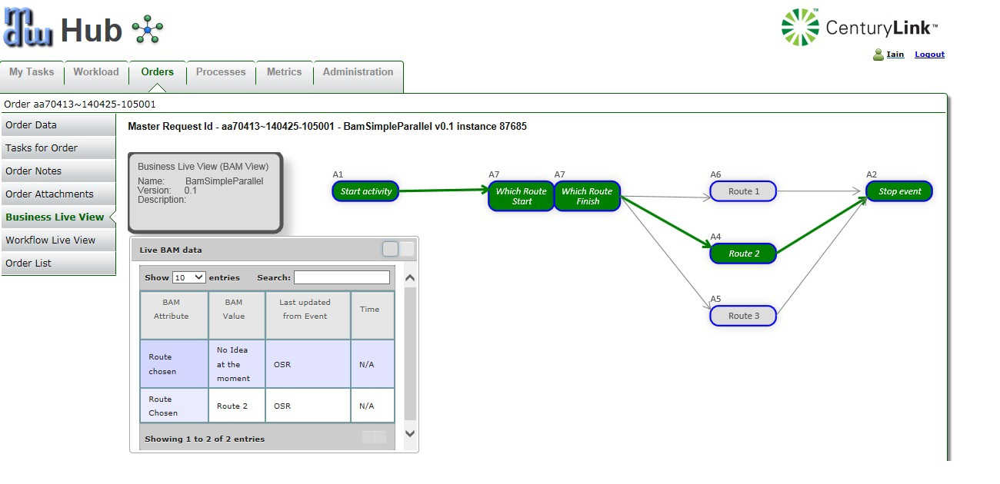
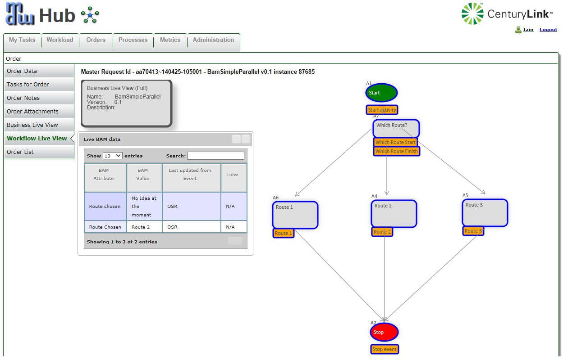

Business Live View
What is the Business Live View?
The Business Live View is a business-driven GUI view of an end-to-end workflow, potentially spanning different applications, displayed on a web or mobile client.
The view is created from BAM monitoring events that have been defined at certain stages throughout the workflow.
The technology used is the following:
Html5 canvas (for drawing workflows on web and mobile clients)
Websockets (Uses an "upgraded" HTTP protocol allowing web browsers to maintain an open connection with a server)
BAM events (existing MDW functionality enhanced for "live" data)
How does it work?
In a simplistic form, assuming the configuration below is completed, a typical BLV process proceeds as follows:
- User adds BAM Monitoring Start/Finish events to certain activities throughout a process,say, "MyBLVProcess", specifying a certain realm, e.g. MOBRealm
- The user runs the "MyBLVProcess"
- As each activity is started/finished, MDW generates BAM events as needed and sends them to a preconfigured websocket. Any clients listening "live" on this websocket will received the BAM events and their HTML5 workflow display will be updated.
- MDW also saves these BAM events in the database
- The web user has the option of 2 different views of the Business Live Data :
- Business Live View
- This view displays (in a flat workflow format), the possible business routes that a workflow could potentially take, and also, highlights using green, the actual route a workflow has taken.
- This view supports zooming in and out and dragging the workflow to wherever the user feels is comfortable.
- This view is also LIVE and will be updated whenever more business events (BAM) are triggered throughout the workflow.
- The user can drill down by double clicking on any business event to gain more information on the event/activity of any specific BAM attributes.
- There is also a movable and minimizable "Live BAM Data" popup which allows the user to search for any specific BAM attribute data that has been configured.

- Workflow Live View
- This view displays the workflow of the main process in an identical size to that seen in Designer
- The activities which are BAM-enabled are depicted with the BAM event underneath the main activity
- This view supports zooming in and out and dragging the workflow to wherever the user feels is comfortable.
- This view is also LIVE and will be updated whenever more business events (BAM) are triggered throughout the workflow.
- As the process progresses, and BAM events are received, this is displayed by the BAM event turning green, and when both BAM events for an activity turn green the whole activity will become green
- The user can drill down by double clicking on any business event to gain more information on the event/activity of any specific BAM attributes.
- If an activity has subprocesses, then the user can drill down into these subprocesses and view the full workflow and BAM data.
- There is also a movable and minimizable "Live BAM Data" popup which allows the user to search for any specific BAM attribute data that has been configured.

Prerequisites
Must be running either ServiceMix 4.5.3 or JBoss Fuse v6.1 (patch 139) - These both support the websocket technology used in BLV
Must have a minimum of MDW v5.5.01 installed and running
How to configure your server for BLV
In addition to the normal steps to install MDW 5.5 features on your ServiceMix or Fuse instance, the following steps are also required to enable Business Live View:
Install the camel-websocket feature
features:install camel-websocket
Also make sure that the bundle camel-core is in an Active state. If it's not then start it.
Edit the file etc/mdw-activemq-blueprint.xml and ensure that there is a transportConnector added for BLV and a brokerURL defined (see blue below)
<broker>
<transportConnectors>
<transportConnector name="openwire" uri="tcp://0.0.0.0:61618"/>
<transportConnector uri="tcp://localhost:61616" />
</transportConnectors>
</broker>
<bean id="activemqConnectionFactory" class="org.apache.activemq.ActiveMQConnectionFactory">
<property name="brokerURL" value="vm://mdw-activemq?create=false&waitForStart=10000" />
</bean>
Ensure that etc/com.centurylink.mdw.cfg file has the following properties set (please note the comments for each)
mdw.container.jms_provider=ActiveMQ
mdw.activemq.connection.factory=mdw-activemq
# Set mdw.bam.useSSL=true only when using SSL
mdw.bam.useSSL=false
# Note, if using on a server, "localhost" should be replaced by the fully qualified host name
# Used by BAM to send BAM messages to an external event handler
mdw.bam.url=http://localhost:8282/MDWWeb/Services/REST
# Name of realm to filter out BAM messages for BLV
# This equates to the Realm name used in the BAM monitoring Tab in MDW Designer
mdw.bam.realm=MyRealm
# Set to "wss" if SSL, "ws" if non-SSL and change port to 9191 for SSL
# In the next property "localhost" should also be replaced by the actual DNS name
# since it is called from javascript client
mdw.bam.websocket=ws://localhost:9090/blvTopic
# Note, this is used by BLV to call web services from client javascript.
# For non SSL it should be something like (with fully qualified domain name)
# mdw.bam.services.url=http://lxdenvmtc099.dev.qintra.com:20001/MDWWeb
# For SSL it should be something like (with fully qualified domain name)
# mdw.bam.services.url=https://lxdenvmtc099.dev.qintra.com:20001/MDWWeb
mdw.bam.services.url=http://localhost:8282/MDWWeb
Discover the required "bam" package
In order for your application to enable the sending of BAM messages, you have to import a "bam" workflow package into your project as follows:
- From MDW Designer, right click on your project and choose "Import/Workflow Package
- Select the "Discover" radio button and click "Next"
- Ensure that "bam", "hub" and "camel" have been selected and click "Next" and "Finish"
Connect your workflow package to enable BLV and BAM
In order for the framework to identify the correct parent Spring app context to associate with the BamToWebsocket.xml file in com.century.mdw.bam package, you'll need to set a configuration parameter to tie your workflow package to your OSGi bundle.
- Right-click on your workflow package in Process Explorer and select Show Properties.
- Select the Configuration property tab and under Environments click the Add button and enter the name "dev".
- Add a property named OsgiBundleSymbolicName and under dev assign the value "com.centurylink.mdw.workflow"
- Restart your JBoss server
- BLV is available from a tab in http://yourHost:yourPort/MDWHub